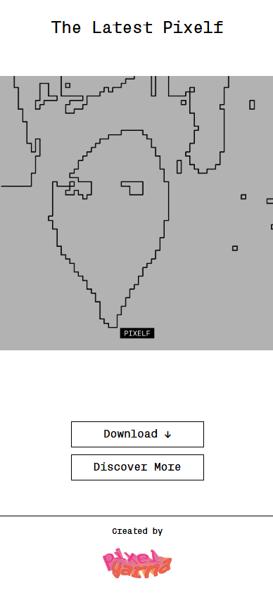
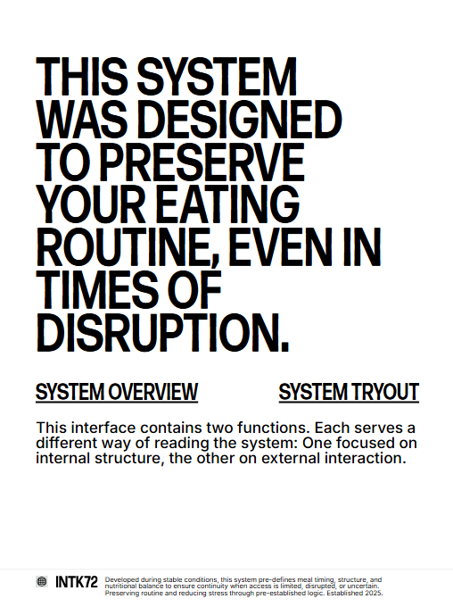
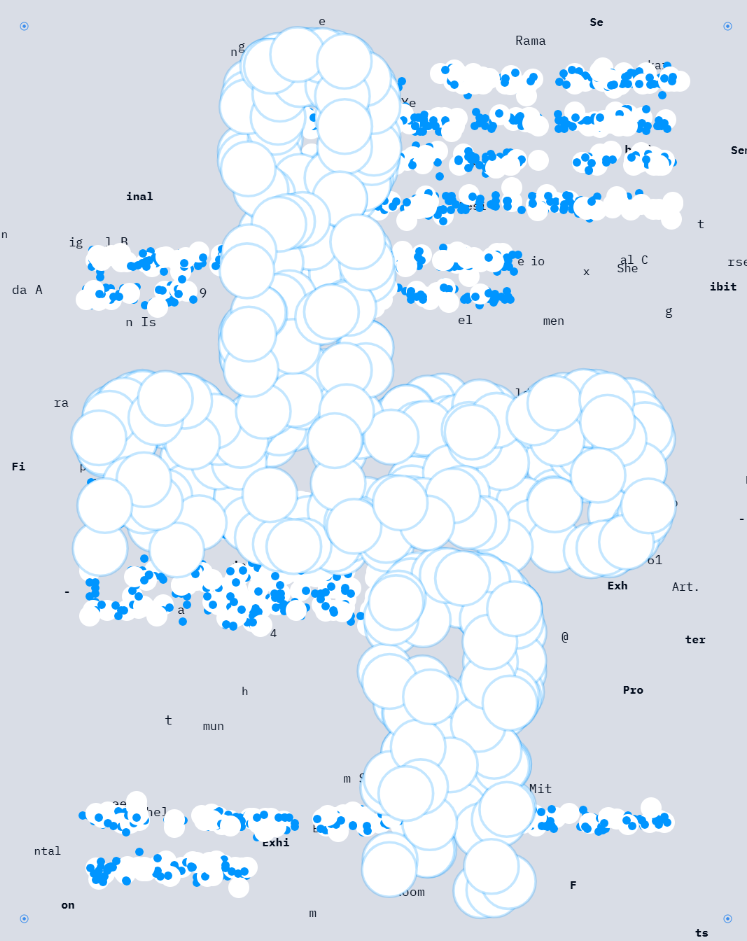

AI systemsProduct engineeringInteractive 3D
AutomationData pipelinesCreative technology
AI systems
Product engineering
Interactive 3D
Selected work / 2024-2026
Built to be used.
Designed to be remembered.
The common thread is not an industry or framework. It is taking a difficult idea, finding the right technical
shape, and owning the build through launch.
Open live site ↗
01 / Product experience
m.2 Experience
A five-page digital experience for a speculative physiological-memory system. I translated detailed design
direction into a production site with custom 3D, data-rich interfaces, synchronized media, and responsive
motion.
- Three.js
- GLTF
- JavaScript
- Interactive data
View source ↗

Open live site ↗
02 / Museum installation
Pixelf
A QR-accessible live installation backed by an unattended Python publishing service, cloud storage,
cache control, and automatic recovery.
- Python
- Cloud storage
- TouchDesigner

Open live site ↗
03 / Interactive art
INTK72
An iPad-first experience that turns a short questionnaire into a personalized visual pattern for
open-ended aesthetic exploration.
- Generative systems
- Touch interaction
- Responsive UI

Open live site ↗
04 / Generative media
Times Language
An animated poster built as an eleven-phase p5.js system, moving from controlled dot growth into
transformations and emergent behavior.
- p5.js
- Generative motion
- Creative coding
What I can own
From loose brief
to working system.
01
AI systems
& automation
Agent workflows, LLM integrations, internal tools, data pipelines, evaluation systems, and the glue that
makes them dependable.
02
Product
engineering
Rapid prototypes and complete web products built across Python, JavaScript, APIs, databases, cloud
infrastructure, and deployment.
03
Creative
technology
Interactive 3D, generative graphics, installations, data visualization, and design-heavy experiences that
standard component libraries cannot produce.
7+
Commissioned products delivered
250+
AI environments reviewed
3+ yrs
Automations running in production
1
Major museum installation
IS
About / How I work
One engineer.
Full ownership.
I am a Vancouver-based software engineer working across AI research infrastructure, product development, and
creative technology.
My best work happens when the problem is still ambiguous. I can sit with a founder or designer, understand
what they are actually trying to make, choose a pragmatic architecture, and carry it through implementation,
deployment, and iteration.
A simple working model
Clear scope.
Fast feedback.
Useful software.
-
01
Understand
We define the real outcome, constraints, and smallest useful version before committing to a large build.
-
02
Prototype
I make the difficult parts tangible early, so decisions happen against working software rather than slides.
-
03
Ship
The final system is tested, documented, deployed, and built to keep working after the launch call ends.